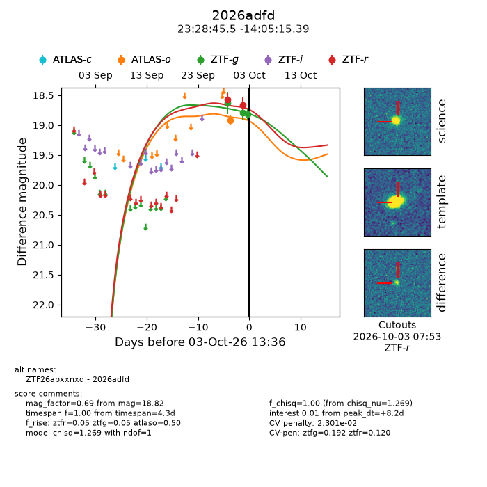
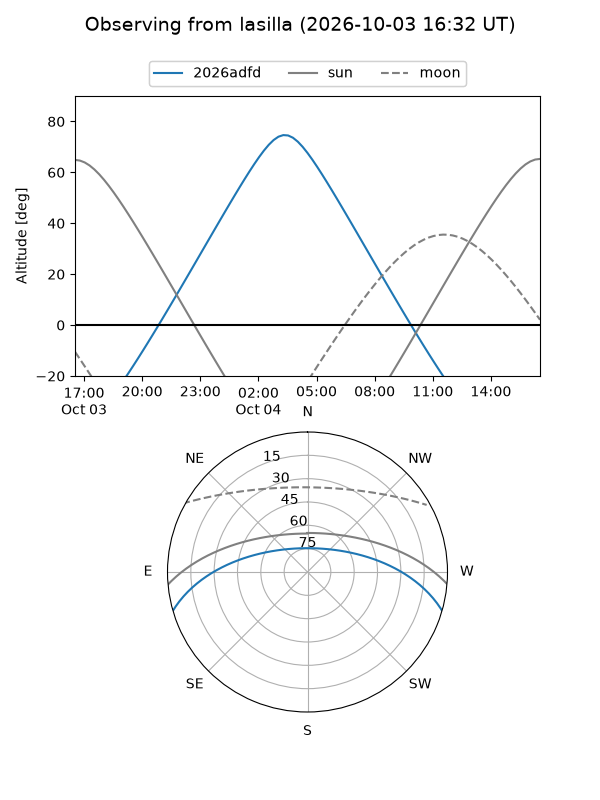
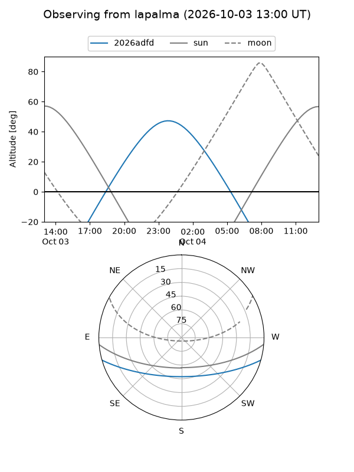
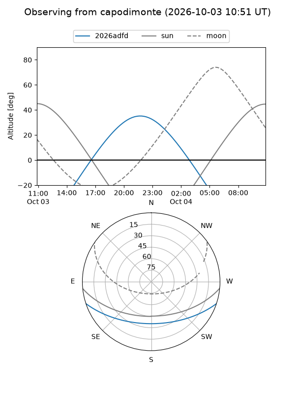
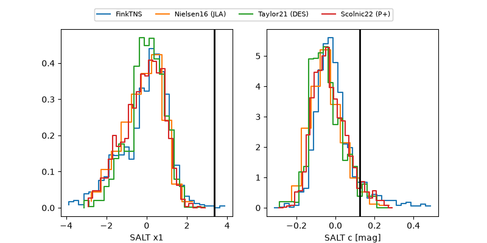

2026adfd
Target 2026adfd at 2026-10-03 13:38
Aliases and brokers:
FINK-ZTF: ztf.fink-portal.org/ZTF26abxxnxq
Lasair-ZTF: lasair-ztf.lsst.ac.uk/objects/ZTF26abxxnxq
ALeRCE-ZTF: alerce.online/object/ZTF26abxxnxq
YSE-PZ: ziggy.ucolick.org/yse/transient_detail/2026adfd
TNS name: wis-tns.org/object/2026adfd
Direct TNS query: direct search
alt names
ZTF26abxxnxq (ztf,fink_ztf)
2026adfd (tns,yse)
Coordinates:
equatorial (ra, dec) = 352.1897,-14.08761
equatorial (HMS+DMS) = 23:28:45.53,-14:05:15.39
galactic (l, b) = (62.8703,-66.72880)
Flags:
TNS type: nan
peak dt: +8.2
likely cv: !!
Photometry:
last atlaso=18.92, ztfg=18.82, ztfr=18.66
1 atlaso, 3 ztfg, 2 ztfr detections
Lightcurve

Visibility



Additional plots
